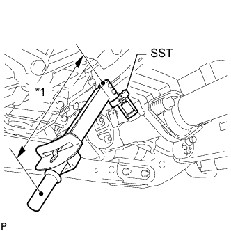
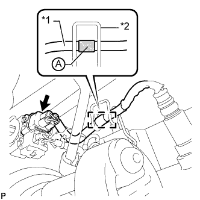

ДАТЧИК СОСТАВА ТОПЛИВОВОЗДУШНОЙ СМЕСИ (для моделей с DPF) > УСТАНОВКА |
| 1. УСТАНОВИТЕ ДАТЧИК СОСТАВА ТОПЛИВОВОЗДУШНОЙ СМЕСИ |
|  |
С помощью SST установите датчик состава топливовоздушной смеси на приемную трубу.
| *1 | Длина рычага |
|  |
Подсоедините разъем датчика состава топливовоздушной смеси и закрепите зажим.
| *1 | Жгут проводов |
| *2 | Зажим |